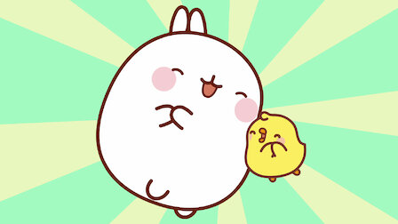
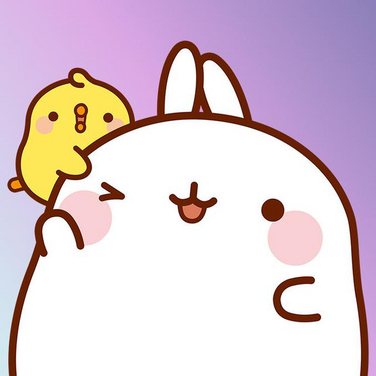
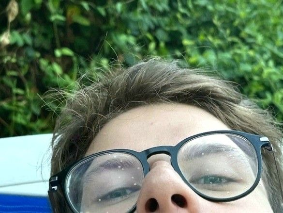
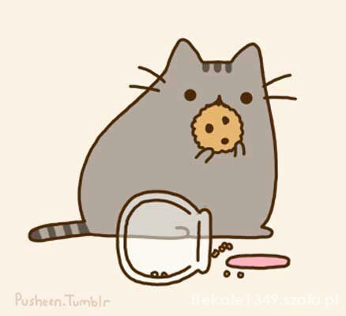
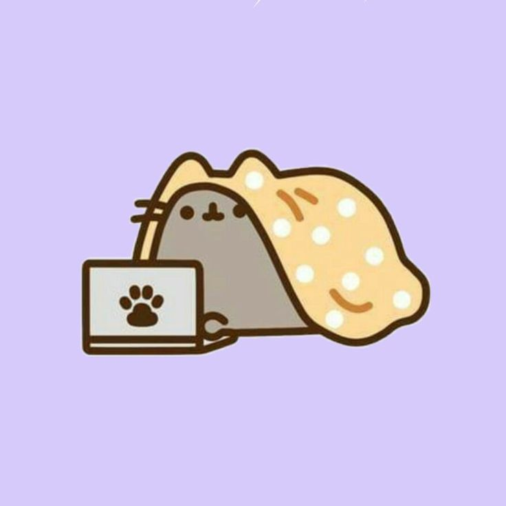
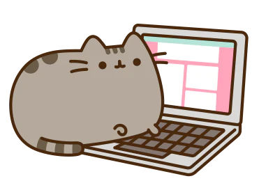

¡Holaaaa!, si están aquí, es muy probable que ya hayan terminado de leer la carta
que les entregué y quisieron visitar el enlace que les di. Bueno, esto es algo que
he estado haciendo desde septiembre de este año, especialmente para guardar todos
momentos que he tenido con ustedes en el colegio, para que puedan verlos cuando
quieran. La verdad es que no sé muy bien por qué quise hacer esto; simplemente
surgió en mi mente. Algo que sí puedo decir es gracias por haber estado conmigo
durante todo el año que pasé en el colegio.
En esta página, quise incluir algunas canciones que me hacen recordar a ustedes y
a todos los recuerdos. No estoy segura de si hay algo más que deba decir en cuanto
al contexto. Espero que se den una vuelta por la página y ojalá les guste,
al igual que las cartas que les entregué en el colegio.


